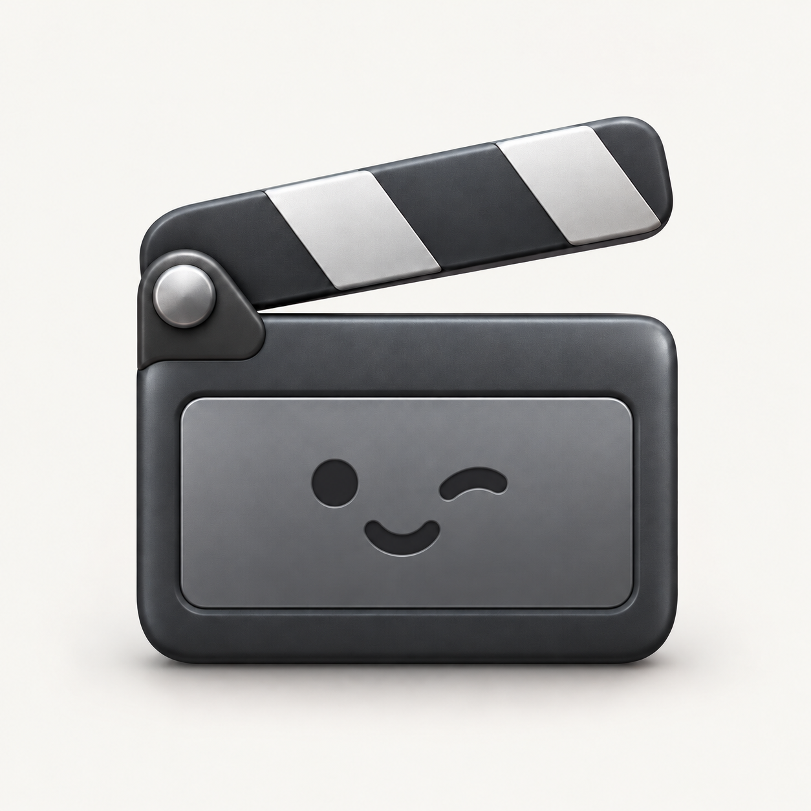

李俊祎 / 个人项目

FrameFlow
从想法到成片，让创作保留控制。
开源测试版
macOS 桌面应用
源码构建
FrameFlow 是一个面向短片与故事创作的中文桌面工作室，将创作对话、剧本与分镜、逐镜生成和已有视频剪辑放在同一条流程里。可以从一句想法开始，也可以带着剧本、小说或视频素材进入，在每个环节检查、修改，再推进到成片。
创作与设计
我希望创作过程既能通过对话快速展开，也能在具体镜头上保留控制。围绕这个目标，我先梳理从想法到分镜的路径，再把镜头编辑、素材管理与任务反馈整理进导演台；随后接入本地 Agent、补上已有视频的剪辑流程，并将常用操作收进两条胶囊栏，让对话和制作衔接得更自然。
想法→
剧本→
分镜→
逐镜制作→
剪辑与导出
功能亮点
- 从对话进入制作：讨论想法、生成剧本与分镜，支持创意、剧本和小说流程。
- 按环节选择执行者：API 与本地 Agent 统一配置，目前实际适配 Codex CLI、Claude Code 和 Pi。
- 逐镜控制的导演台：编辑描述、时长、统一风格和首尾帧，保留多次生成版本，预览后合并导出。
- 已有视频的 Agent 剪辑：导入素材，生成裁切与排序方案，确认后由 FFmpeg 处理成片。
- 简洁的中文桌面交互：双胶囊栏承担导航和常用操作，串联对话、素材与镜头制作。
当前状态
FrameFlow 当前作为开源测试版提供源码，可按 README 在 macOS 上构建桌面应用。创作流程已整理进中文界面，接入自己使用的 Agent 或模型服务后，可以继续验证生成效果与剪辑体验。
新视频生成需要配置视频 API。已有视频的 Agent 剪辑依据文字要求和素材时长生成方案，经用户确认后执行；不默认具备观看视频的能力。本地 Agent 沿用自身连接的模型与服务，本地接入不代表离线运行。